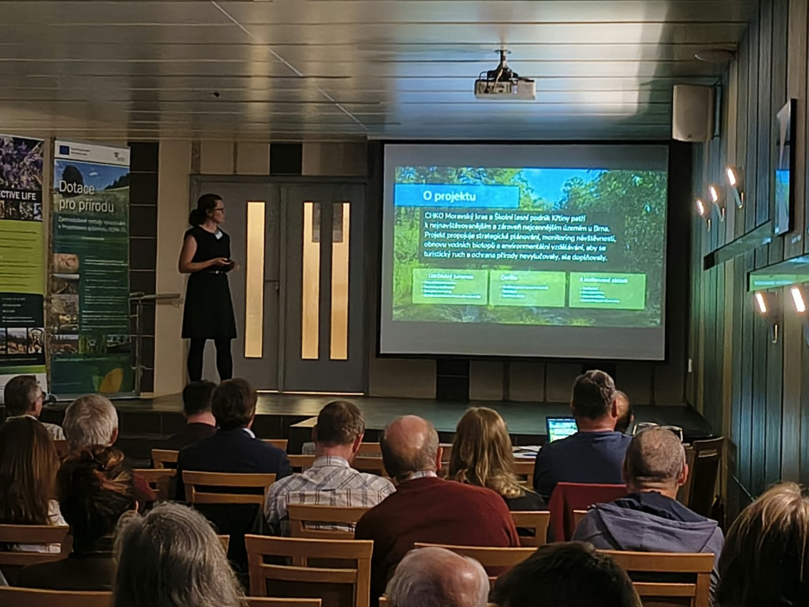
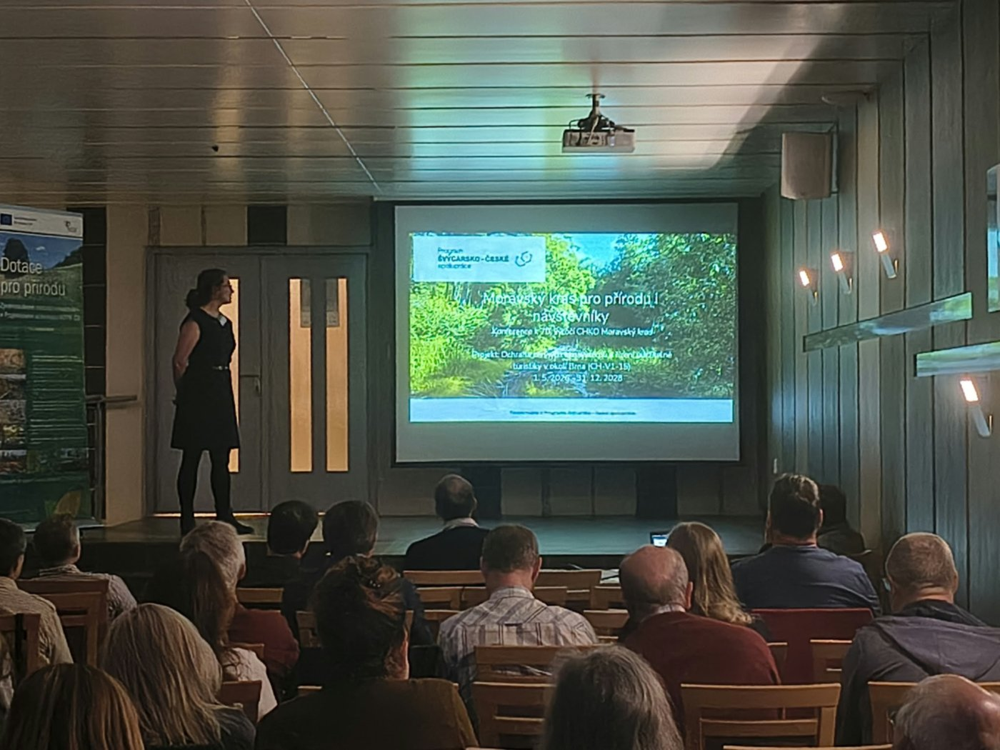
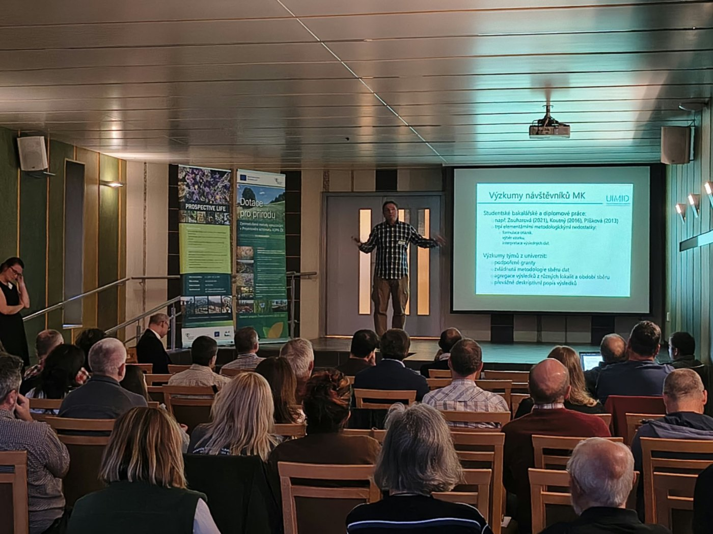
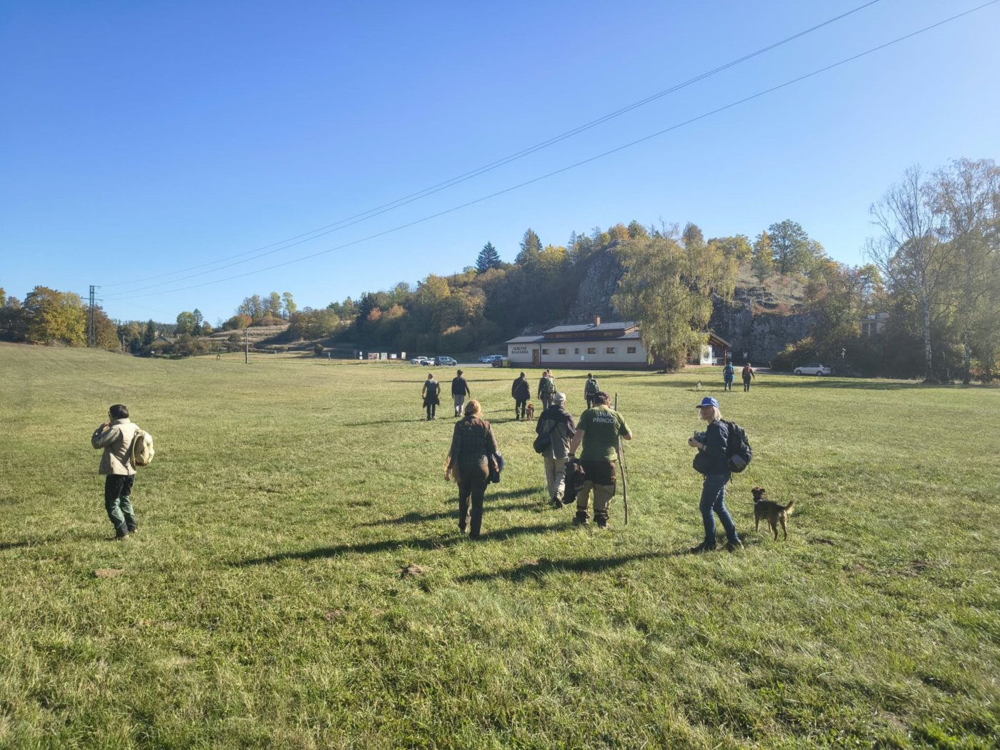
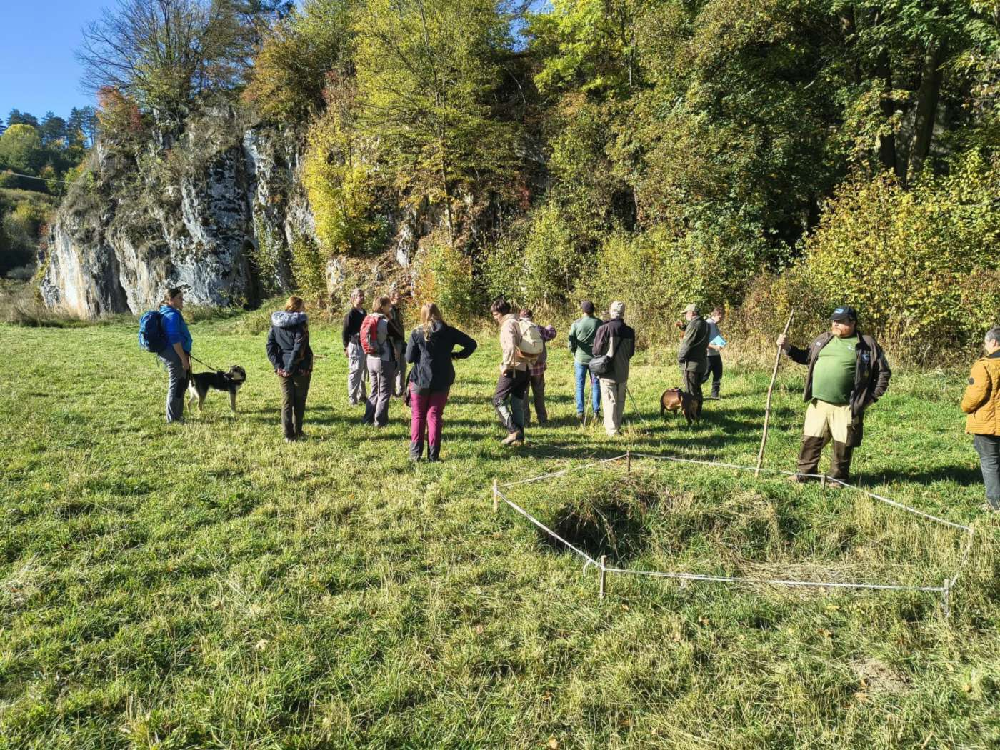
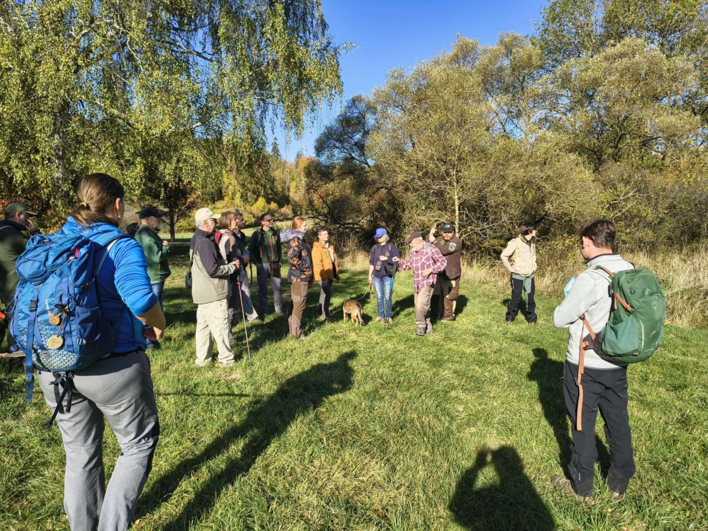
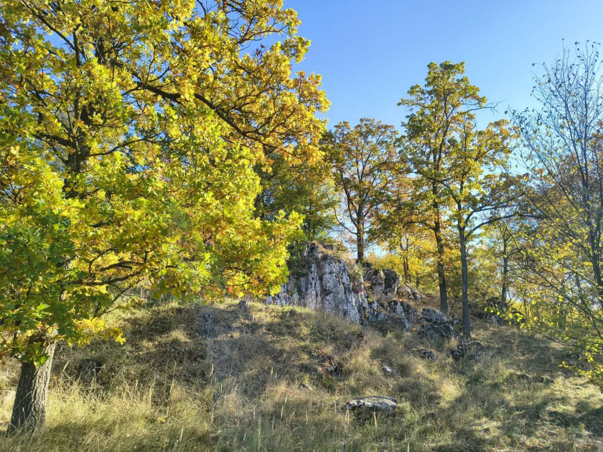
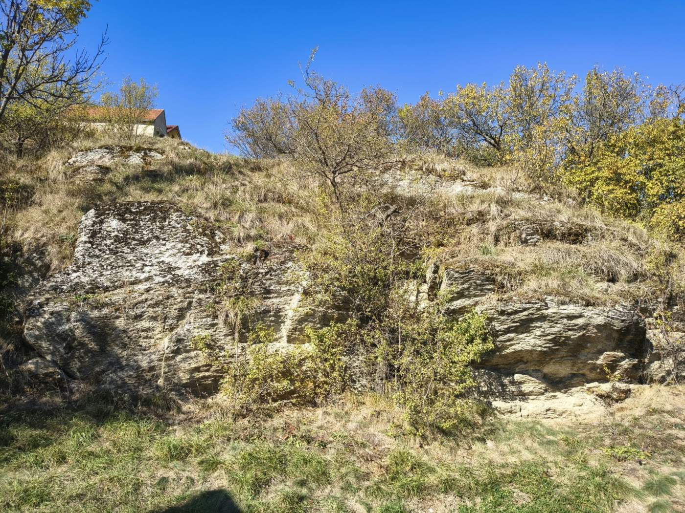
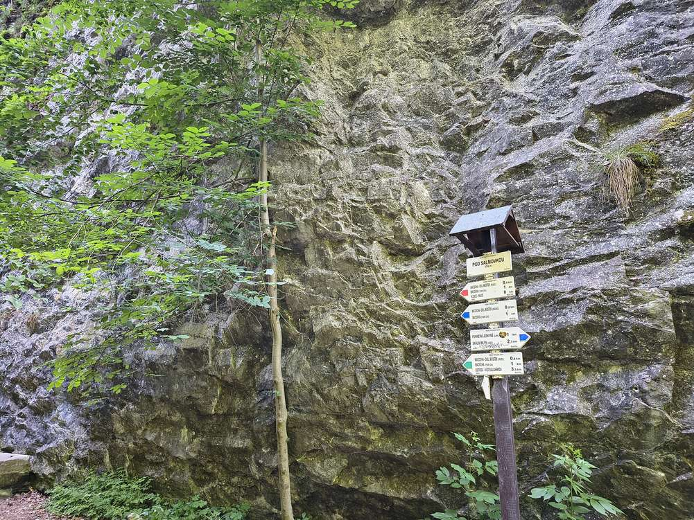

Chráněná krajinná oblast Moravský kras letos slaví 70 let od svého vyhlášení. U této příležitosti uspořádala Správa CHKO Moravský kras (Agentura ochrany přírody a krajiny ČR) ve dnech 15. a 16. října 2026 odbornou konferenci v Blansku, kde jsme představili i náš projekt.
Konference se konala v rekreačním zařízení Vyhlídka v Blansku. První den patřil přednáškám rozděleným do čtyř bloků: od historie CHKO a podzemí Moravského krasu přes 3D modely jeskyní, péči o lesy a archeologii až po záchranné programy pro ohrožené druhy, život netopýrů nebo historii speleologických výzkumů. Součástí programu byla i slavnostní vernisáž výstavy 70 let proměn Moravského krasu, která srovnává historické a současné fotografie zdejší krajiny a přírody. Druhý den čekaly účastníky odborné exkurze do Nové Amatérské jeskyně a do okolí Ostrova u Macochy.
V závěrečném bloku věnovaném poznání, péči a udržitelnému rozvoji jsme vystoupili s příspěvkem Moravský kras pro přírodu i návštěvníky: hledání cesty k udržitelnému turismu. Tereza Davidová a Michal Medek z ASITIS s.r.o. v něm představili, na čem projekt ve čtyřech realizovaných oblastech pracuje.
Hlavní pozornost patřila Plánu udržitelného turismu. Ten má sladit rekreační využívání území s ochranou přírodních a krajinných hodnot a navazuje na Koncepci práce s návštěvnickou veřejností CHKO Moravský kras i na Strategii rozvoje cestovního ruchu v turistické oblasti Moravský kras a okolí 2025–2031. Protože možnosti, jak návštěvníky rozložit uvnitř CHKO, jsou omezené, počítá plán také s nasměrováním části návštěvnosti do vhodných lokalit Školního lesního podniku Křtiny a k dalším alternativním cílům v širším okolí.
Mluvili jsme také o monitoringu návštěvnosti. V rámci projektu přibude pět nových sčítačů návštěvníků, které rozliší pěší a cyklisty i směr jejich pohybu. Na závěr jsme ukázali místa, kde je tlak návštěvníků na přírodu už dnes nejvýraznější, například Pustý žleb, okolí jeskyně Pekárna nebo NPR Hádecká planinka.
Konference sdružila na jednom místě ty, kdo o Moravský kras pečují, zkoumají ho nebo v něm pracují s návštěvníky: ochranáře, jeskyňáře, vědce, muzejníky, lesníky i zástupce místních organizací. Díky tomu se nám podařilo navázat kontakty s řadou klíčových aktérů v území, se kterými chceme v projektu dál spolupracovat.
Děkujeme Správě CHKO Moravský kras za pozvání a za velmi dobře zorganizovanou akci. Konference byla podpořena finančním příspěvkem z našeho projektu a z projektu PROSPECTIVE LIFE. Více o výročí najdete na webu Správy CHKO Moravský kras.







Konference byla podpořena finančním příspěvkem z projektu „Ochrana cenných ekosystémů a řízení udržitelné turistiky v okolí Brna“ (č. CH-V1-15), který je realizován s finanční podporou v rámci Programu Švýcarsko-české spolupráce. Realizátorem je Atregia s.r.o. ve spolupráci s Mendelovou univerzitou v Brně, ASITIS s.r.o., KAVYL, spol. s r.o. a švýcarským partnerem WSL.
Podpořeno švýcarským příspěvkem na snižování hospodářských a sociálních rozdílů v EU.

Přečtěte si, jak projekt pracuje s návštěvností Moravského krasu a proč vzniká Plán udržitelného turismu.